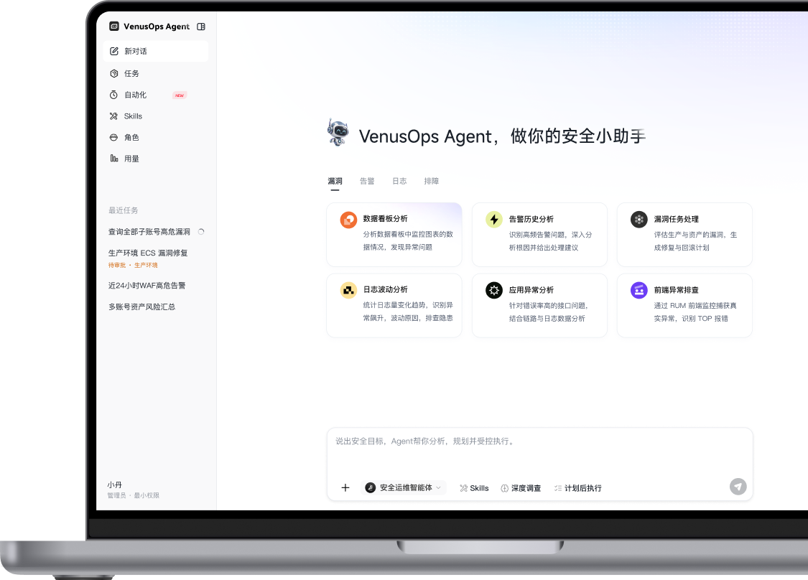

01 / DISCOVERY
概览与洞察
从产品定义到关键问题优先级02 / HOMEPAGE
首页重构
重建导航、场景入口与视觉层级
03 / END-TO-END EXPERIENCE
AI 全链路体验
使用前 · 使用中 · 使用后
04 / VALIDATION

01 / DISCOVERY
02 / HOMEPAGE
03 / END-TO-END EXPERIENCE
04 / VALIDATION
· 按 ← → 切换 · 按 ESC 关闭